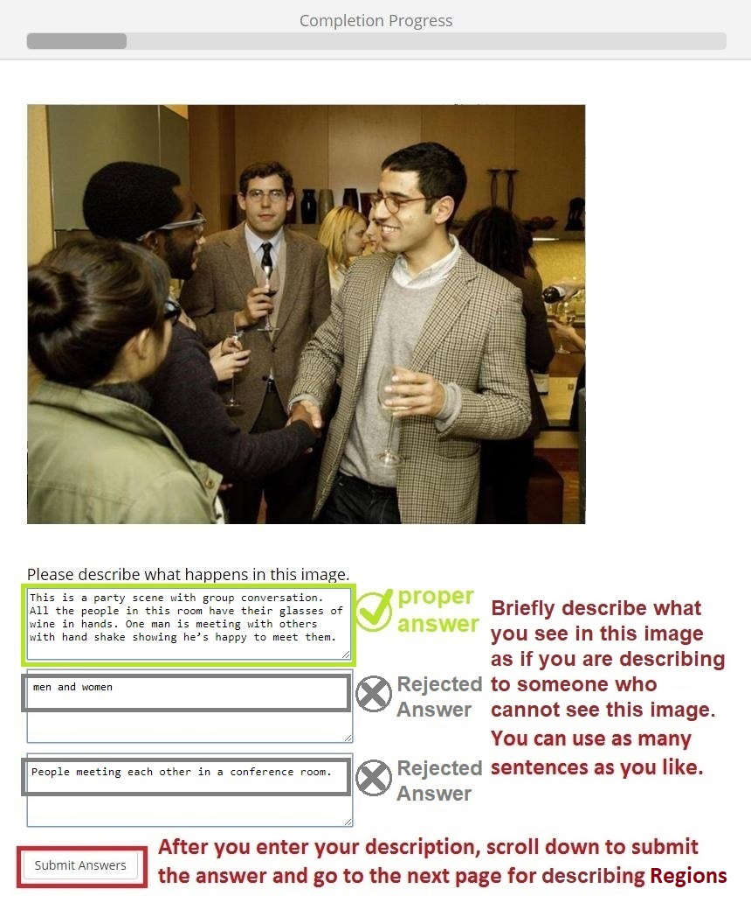
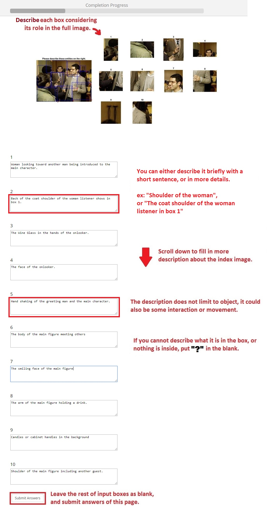
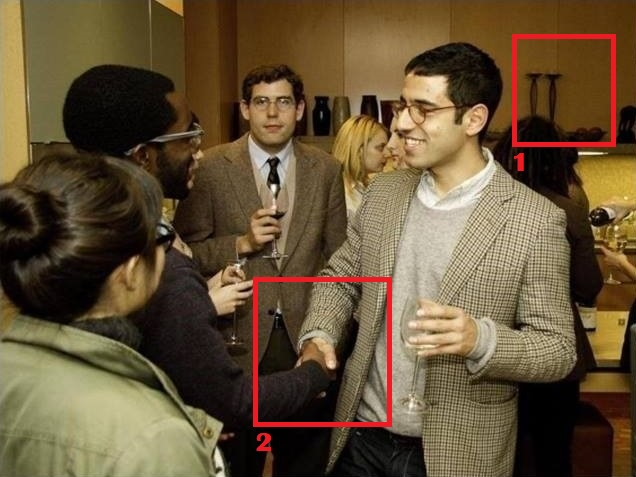

<!doctype html>
<html>
	<head>
		<title>My experiment</title>
		<script src="plugins/jquery.min.js"></script>
		<script src="jspsych.js"></script>
		<script src="plugins/jspsych-single-stim.js"></script>
		<script src="plugins/jspsych-survey-text.js"></script>
		<script src="plugins/jspsych-instructions.js"></script>
		<script src="plugins/jspsych-text.js"></script>
		<script src="plugins/jspsych-call-function.js"></script>
		<script src="plugins/jspsych-irbform.js"></script>
		<script src="plugins/jspsych-survey-multi-choice.js"></script>
		<script src="plugins/jspsych-survey-likert.js"></script>
		<script src="plugins/jspsych-survey-VIGL.js"></script>
		<link rel="stylesheet" href="plugins/jspsych.css"></link>
		
		<script src="https://ajax.googleapis.com/ajax/libs/jqueryui/1.10.3/jquery-ui.min.js"></script>
		<!--
		<link href="https://ajax.googleapis.com/ajax/libs/jqueryui/1.10.3/themes/black-tie/jquery-ui.min.css" rel="stylesheet" type="text/css"></link>
		
		<link rel="stylesheet" href="plugins/jspsych-ui.css"></link>
		<script src="//cdnjs.cloudflare.com/ajax/libs/wavesurfer.js/1.3.2/wavesurfer.min.js"></script>
		<link rel="stylesheet" href="plugins/jspsych.css"></link>
		<script src="https://ajax.googleapis.com/ajax/libs/jqueryui/1.10.3/jquery-ui.min.js"></script>
		<link href="https://ajax.googleapis.com/ajax/libs/jqueryui/1.10.3/themes/black-tie/jquery-ui.min.css" rel="stylesheet" type="text/css"></link>
		
		<script src="plugins/jquery.min.js"></script>
		<script src="plugins/jquery-ui.min.js"></script>
		<link rel="stylesheet" href="plugins/jquery-ui.css"></link>
		<link rel="stylesheet" href="plugins/jspsych.css"></link>
		-->
	</head>
	<body>
		<div id="jspsych-target"></div>
		<!--
		<div id="jspsych-target" class="jspsych-display-element" style="border:1px solid red; height: 300px; width: 500px;"></div>
		<div id="jspsych-trial-target" class="jspsych-display-element" style="border:1px solid blue; height: 300px; width: 500px;"></div>
		-->
	</body>
	
	<script>
		urlvars = jsPsych.data.urlVariables();
		mid = urlvars.mid;
		var timeline = [];
		
		var txtFile = "https://empoweredlab.psych.umn.edu/FixationLabeling/attributes/tmp123.txt";
		
		// IRB form
		var IRB = {
			type: 'irbform',
			stimulus: 'images/irb3.png',
			questions: ['Please choose one of the following two options: '],
			options: [['I consent to participate in the study', 'I do not consent to participate in the study']],
			required: [true],
		}
		timeline.push(IRB);
		/*
		var intro = {
			type: 'instructions',
			pages: [
				'<p> Welcome to the Image Labeling and Description experiment. <br> Please Click Next to begin. </p>', // <br> Reminder: This task is required to use Chrome Browser to accomplish. <br>
				'<p> In the experiment, you will describe the given images and subregions in the image. <br> Your payment will be based on how closely your descriptions match the structure shown in the instructions. </p>',
				'<p> Here is the sample picture for the page of filling in the description: </p> </img>',
				'<p> Once you finish filling description of the image, the next page will be the same image but with some subimage boxes for labeling purpose. Describe the content in the subimage and put your description at corresponding index of input box: </p> </img>',
				'<p> This two-step process will be repeated with several different pictures. Press next to answer a couple short questions about the instructions before the test. </p>'
			],
			show_clickable_nav: true,
		}
		timeline.push(intro);
		
		// Qualify Questions
		
		var qualify_answers1 = ["Wooden decoration on the wall", "Cabinet or Cabinet handle", "Something", "The upper part of a woman's head"];
		var qualify_answers2 = ['Two persons', 'Two men shaking their hands while they are greeting each other.', 'wine glasses', 'handels'];
		var qualify_test = {
			type: 'survey-multi-choice',
			questions: [['Which answer is NOT a qualified answer for describing box 1?'], ['Which of the following is the BETTER description for the box 2 considering the whole image?']],
			options: [qualify_answers1, qualify_answers2],
			preamble: '<p> Qualify Questions based on the instructions and the following image: </p> </img>',
			//labels: [qualify_labels], 
			data: { question: 'test' },
		};
		timeline.push(qualify_test);
		
		// Check whether the subject pass the qualifying questions
		var lastTrialData = function() {
			var lastTrialData = jsPsych.data.getLastTrialData();
			console.log(lastTrialData.responses);
			mid = jsPsych.data.urlVariables().mid;
			console.log(mid);
			tmp_MID = "R"+Date.now();//jsPsych.randomization.randomID(13);
			console.log(tmp_MID);
			// check whether the website has user's mid
			if(mid===undefined){
				console.log("no mid?");
				mid = tmp_MID;
			}
			if(lastTrialData.responses != '{"Q0":"Something","Q1":"Two men shaking their hands while they are greeting each other."}'){
				saveData("data/" + mid.toString() + "_wrong.csv", jsPsych.data.dataAsCSV());
				jsPsych.endExperiment('You did not answer the qualifying questions correctly. The experiment has ended. Thank you for your time.');
			}
		}
		
		var test_data = {
			type: 'call-function',
			func: lastTrialData
		}
		timeline.push(test_data);
		
		var intro2 = {
			type: 'instructions',
			pages: [
				'<p> Congratulation!! You have passed the qualifying questions. <br> Please click Next to start the image description test. </p>'
			],
			show_clickable_nav: true,
		};
		timeline.push(intro2);
		*/
		//Randomizing the sound files. (array, sampleSize, withReplacement)
		//permImg = jsPsych.randomization.sample(images, 113, false);
		// Question index pool
		var q_index = ["1","2", "3", "4", "5", "6", "7", "8", "9", "10", "11", "12", "13", "14", "15", "16", "17", "18"];
		
		// ####################### CHANGE HERE #######################
		var offset = 0; // indicating the current image set for annotation. e.g. annotating img 1-10 -> offset=0 ; annotating img 21-30 -> offset = 20
		var totalImg = 2; // indicating how many images are going to be annotated in this HIT; Usually we'll use around 10 images so that the annotation time is not too long.
		// ###########################################################
		
		for(var i = 1; i < totalImg+1; i++){
			// Image Descriptions
			var img_description = {
				type: 'survey-text',
				//display_element: $('#jspsych-target'),
				preamble: '<p> Describe the image as if you are describing to someone who cannot see this image (' + i + '/' + totalImg + '): </p> </img>', // width=640 height=480
				questions: ["Please describe in details what is happening in this image in three to five sentences."],
				rows: [10],
				columns: [60],
				is_html: true,
				data: {qtype: "Description", index: (offset+i)},
			};
			timeline.push(img_description);
			
			// Labeling Descriptions
			var img_labeling = {
				type: 'survey-text',
				questions: q_index.slice(0,10),
				//display_element: $('#jspsych-trial-target'),
				preamble: '<p> Describe each box considering its role in the full image given your previous description. (' + i + '/' + totalImg + '): </p> </img>', //
				rows: [4,4,4,4,4,4,4,4,4,4],
				columns: [60,60,60,60,60,60,60,60,60,60],
				is_html: true,
				data: {qtype: "Labeling", index: (offset+i)}
			};
			var tf_op = ["YES", "NO"]
			var img_truefalse = {
				type: 'survey-multi-choice',
				questions: q_index.slice(0,10),
				options: [tf_op, tf_op, tf_op, tf_op, tf_op, tf_op, tf_op, tf_op, tf_op, tf_op],
				preamble: '<p> Test Radiobutton </p>',
				is_html: true,
				//horizontal: true,
				data: { question: 'test' },
			};
			
			var vigl = {
				type: 'jspsych-survey-VIGL',
				questions: q_index.slice(0,10),
				options: [tf_op, tf_op, tf_op, tf_op, tf_op, tf_op, tf_op, tf_op, tf_op, tf_op],
				//display_element: $('#jspsych-trial-target'),
				preamble: '<p> Describe each box considering its role in the full image given your previous description. (' + i + '/' + totalImg + '): </p> </img>', //
				rows: [4,4,4,4,4,4,4,4,4,4],
				columns: [60,60,60,60,60,60,60,60,60,60],
				is_html: true,
				data: {qtype: "Labeling", index: (offset+i)}
			};
			timeline.push(vigl);
			
			/*
			// Save intermediate data
			var save_data_med = {
				type: 'call-function',
				func: function(){
					mid = jsPsych.data.urlVariables().mid;
					console.log(mid);
					tmp_MID = "R"+Date.now();//jsPsych.randomization.randomID(13);
					console.log(tmp_MID);
					if(mid===undefined){
						console.log("no mid?");
						mid = tmp_MID;
					}
					saveData("data/" + mid.toString() + "_med.csv", jsPsych.data.dataAsCSV())
				}
			};
			timeline.push(save_data_med);
			*/
		}
		
		// generate a random subject ID
		var subject_code = jsPsych.randomization.randomID();
		var nowTime = Date.now();
		console.log("OUTSIDE: "+subject_code);
		console.log("TIME: "+nowTime);
		if(mid===undefined){
			mid = "R"+Date.now();
		}
		console.log("MID: "+mid);
		
		jsPsych.data.addProperties({
			subject: subject_code, //created above
			mid: mid, //pulled from URL
			date: nowTime, //timestamp
		});
		
		var save_data = {
			type: 'call-function',
			func: function(){
				mid = jsPsych.data.urlVariables().mid;
				console.log(mid);
				tmp_MID = "R"+Date.now();//jsPsych.randomization.randomID(13);
				console.log(tmp_MID);
				if(mid===undefined){
					console.log("no mid?");
					mid = tmp_MID;
				}
				saveData("data/" + mid.toString() + ".csv", jsPsych.data.dataAsCSV())
			}
		};	
		timeline.push(save_data);

		// Generate unique code for subject to go back and reply in Mturk progress
		/*
		var unique_code = {
			type: "text",
			text: "Your unique code is " + subject_code + ". You may exit the page once you have copied your unique code. Once you exit your unique code is gone. <p> If this happens, please email us with your Mech Turk ID."
			cont_key: ['q'],
		};
		timeline.push(unique_code);
		*/
		
		var unique_code = {
			type: 'instructions',
			pages: [
				'Your unique code is ' + subject_code + '. You may exit the page once you have copied your unique code. Once you exit your unique code is gone. <p> If this happens, please email us with your Mech Turk ID.'
			],
			show_clickable_nav: true,
		}
		timeline.push(unique_code);
		
		// function for saving data
		function saveData(filename, filedata){
			$.ajax({
				type:'post',
				cache: false,
				url: 'save_data.php', // this is the path to the above PHP script
				data: {filename: filename, filedata: filedata}
			});
		}
		
		jsPsych.init({
			display_element: $('#jspsych-target'),
			timeline: timeline,
			show_progress_bar: true,
			/*
			on_finish: function() {
				jsPsych.data.displayData();
				saveData("data/" + mid + ".csv", jsPsych.data.dataAsCSV())
			},
			*/
		});
	</script>